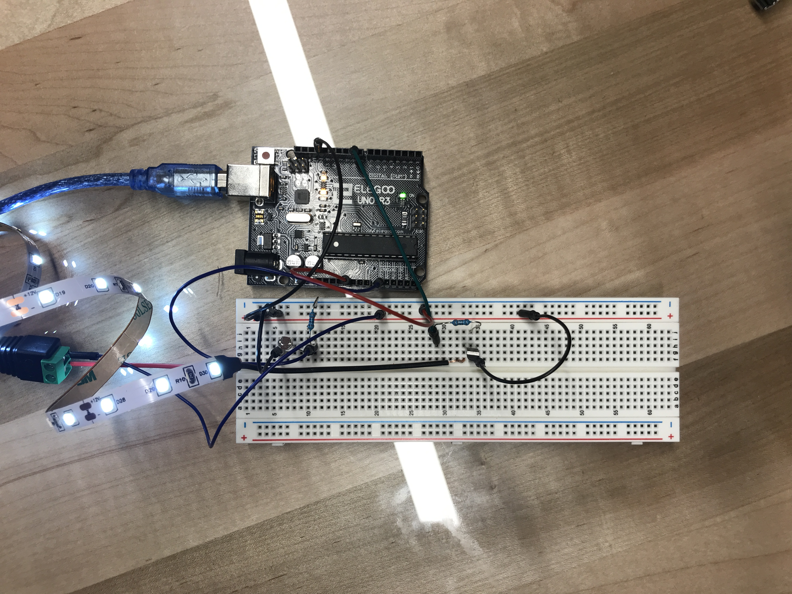
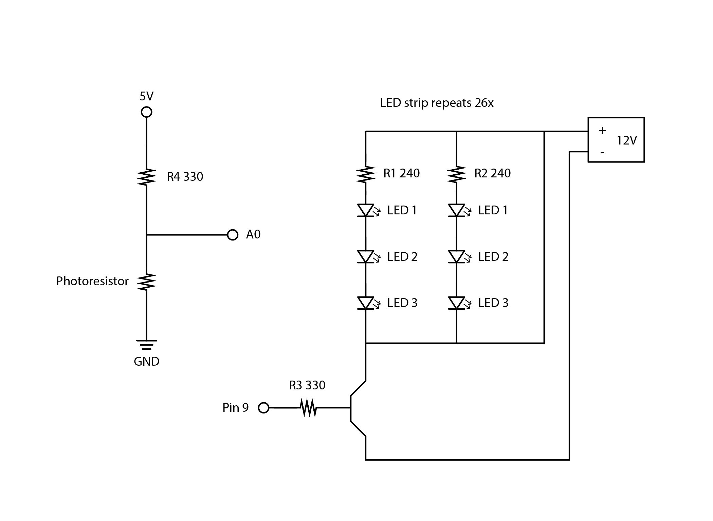

Here is all the documentation for assignment 4.
 Circuit
 Schematic
300 LEDs / (18W) = 78 LEDs / (xW)
x = 4.68W
P = IV
I = P/V
I = 4.68W / 12V
I = 0.39A
V = IR
I = V/R
I = 5V / 240 ohms
I = 0.020A or 20mA
The circuit in action.
const int analogInPin = A0; // IN pin does not need to change
const int ledPin = 9; // LED connected to digital pin 9
int sensorValue = 0; // value read from the photoresistor
int outputValue = 0; // value output to the PWM (analog out)
//Setting up Arduino pins and serial monitor
void setup() {
pinMode(analogInPin, INPUT); // set analogInPin A0 as an input
Serial.begin(9600); // initialize serial communications at 9600 bps
}
//This function will keep looping
void loop() {
sensorValue = analogRead(analogInPin); // set sensorValue as the value read by analogInPin
Serial.println(sensorValue); // write the sensorValue on the serial monitor
outputValue = map(sensorValue, 830, 920, 0, 120); // map the outputValue from the sensorValue
analogWrite(ledPin, outputValue); //set the brightness of the ledPin as the outputValue
Serial.print("sensor = ");
Serial.print(sensorValue);
Serial.print("\t output = ");
Serial.println(outputValue);
}
The code snippet.